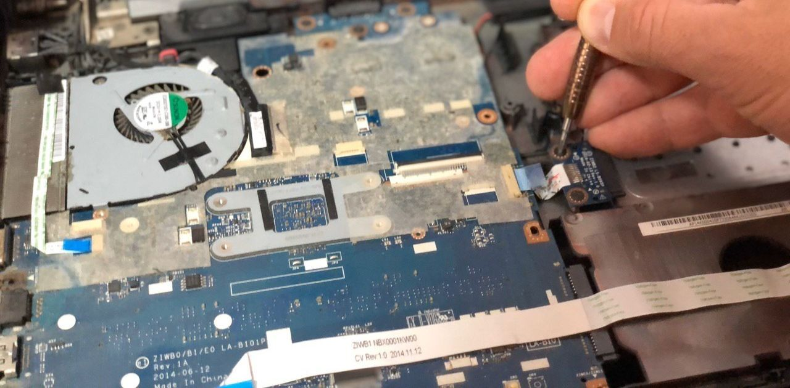
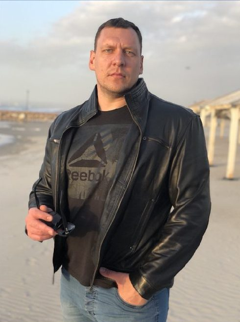
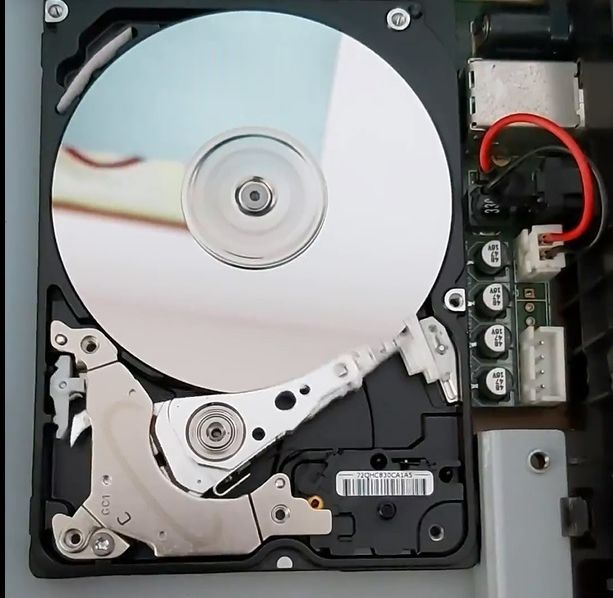
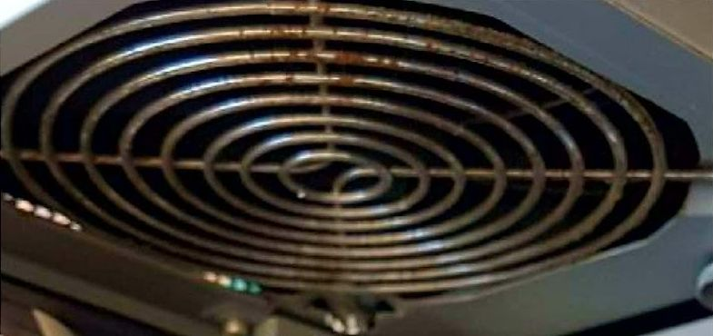
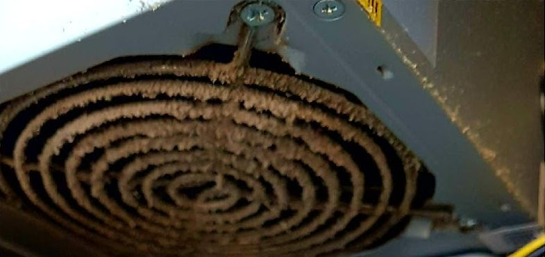
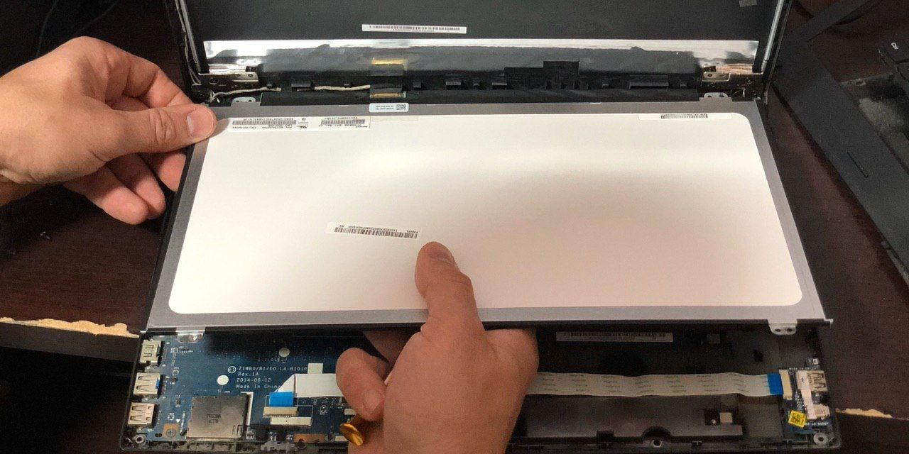

תיקון מחשבים וניידיםDesktop & laptop repair
לוחות, חיבורים, מאווררים ורכיבים. בתמונה: עבודה של איליה.Boards, connectors, fans and parts. Pictured: one of Ilya’s jobs.
קונספט לדוגמה שנבנה עבור תיקון מחשבים בחיפה והקריות וילאגו · זה אינו האתר הרשמי של העסקA sample concept built for Vilago Computer Repair, Haifa & Krayot · This is not the business’s official website

איליה מתקן מחשבים נייחים וניידים בקריית מוצקין, בחיפה ובקריות: אבחון, ניקוי, החלפת מסך ושחזור מידע.Ilya repairs desktops and laptops in Kiryat Motzkin, Haifa and the Krayot: diagnosis, cleaning, screen replacement and data recovery.
איליה, הטכנאי של וילאגו. הרשימה על המסך לקוחה מהמודעה שלו.Ilya, Vilago’s technician. The list on the screen comes from his own ad.

מחשבים נייחים וניידים, חומרה ותוכנה.Desktops and laptops, hardware and software.
לוחות, חיבורים, מאווררים ורכיבים. בתמונה: עבודה של איליה.Boards, connectors, fans and parts. Pictured: one of Ilya’s jobs.
במחשבים ניידים.On laptops.
הוצאת אבק ממאווררים ומגופי קירור.Dust out of fans and heatsinks.

מדיסקים קשיחים.From hard drives.
כולל אנטי־וירוס.Antivirus included.
איליה מגיע אליכם.Ilya comes to you.
מה תקול, ולמה.What’s wrong, and why.
מחשב שלם, מורכב מחלקים.A whole computer, assembled from parts.
ניקוי של מחשב ביתי, לפני ואחרי. גררו את הקו.A home computer cleaned, before and after. Drag the line.
“אחרי שחפשתי טכנאי טוב למחשב שלי, אני מאוד מרוצה מהתיקון. ניקו מחשב, מאוורים…”
“After looking for a good technician for my computer, I’m very happy with the repair. They cleaned the computer, the fans…”


התמונות: מתוך תמונות העסק בגוגלPhotos: from the business’s Google listing
דיסק קשיח פתוח, מתוך העבודות של איליה. שחזור מידע שאבד הוא אחד השירותים שהוא מפרסם.An opened hard drive, from Ilya’s work photos. Recovering lost data is one of the services he advertises.
“…המחשב לא נדלק בכלל, וחשבתי שאיבדתי את כל החומר. פניתי לאיליה והוא הראה מקצועיות יוצאת דופן.”
“…the computer wouldn’t turn on at all, and I thought I’d lost all my material. I turned to Ilya and he showed exceptional professionalism.”

החלפת מסך במחשב נייד, מתוך העבודות של איליה.A laptop screen replacement, from Ilya’s work photos.
אני רוצה להמליץ בחום על איליה, הייתה לי בעיה מאוד מתסכלת המחשב לא נדלק בכלל, וחשבתי שאיבדתי את כל החומר. פניתי לאיליה והוא הראה מקצועיות יוצאת דופן. הוא ביצע אבחון מהיר, הסביר לי בצורה ברורה למה המחשב לא נדלק, ומה הפתרון הנדרש…
I warmly recommend Ilya. I had a very frustrating problem: the computer wouldn’t turn on at all, and I thought I’d lost all my material. I turned to Ilya and he showed exceptional professionalism. He diagnosed it quickly and explained clearly why it wouldn’t turn on and what the fix was…
טכנאי מצויין! הגיע תוך שעה ולא יותר. הרכיב מחשב חדש בתוך מספר דקות. מאד מרוצה וממליץ לכולם.
An excellent technician! He came within an hour, no more. He assembled a new computer in a few minutes. Very pleased, and I recommend him to everyone.
איש מאוד מקסים, מקצועי… כל המערכת שלי עובדת מעולה… ממליצה
A really lovely man, professional… my whole system works great… I recommend him.
תודה, אחרי שחפשתי טכנאי טוב למחשב שלי, אני מאוד מרוצה מהתיקון. ניקו מחשב, מאוורים…
Thank you. After looking for a good technician for my computer, I’m very happy with the repair. They cleaned the computer, the fans…
אחד הטכנאים הטובים שאני מכיר עזר תוך כמה דקות אפילו שאני גר בחו״ל והבעיה נפתרה ממליץ בחום
One of the best technicians I know. He helped within a few minutes even though I live abroad, and the problem was solved. Warmly recommended.
כן. ביקור בבית הלקוח מופיע ברשימת השירותים שלו.Yes. Home visits are on his own list of services.
לקוח שגר בחו״ל כתב בגוגל שאיליה עזר לו תוך כמה דקות. כתבו לו ושאלו.A customer who lives abroad wrote on Google that Ilya helped him within a few minutes. Message him and ask.
כן: תיקוני מחשבים וניידים, כולל החלפת מסך וניקוי מאווררים.Yes: desktop and laptop repairs, including screen replacement and fan cleaning.
שחזור מידע שאבד הוא אחד השירותים שאיליה מפרסם. ספרו לו מה קרה.Recovering lost data is one of the services Ilya advertises. Tell him what happened.
ראשון עד חמישי 8:00–20:00, שישי 8:00–17:00, שבת סגור.Sunday to Thursday 8:00–20:00, Friday 8:00–17:00, closed on Saturday.